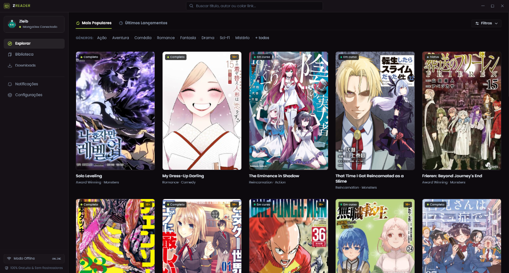
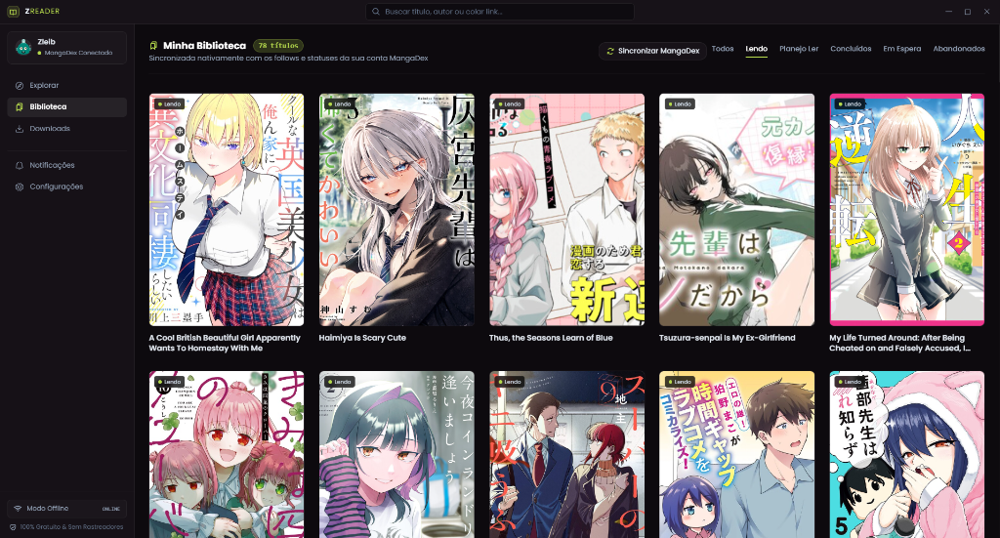
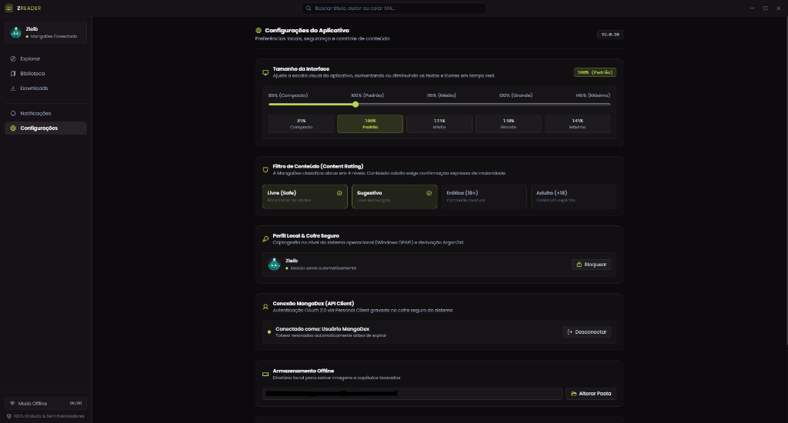

Windows
Instalador (.exe) · 64 bits
Baixar para WindowsSe o SmartScreen avisar, veja como instalar.
Verificar integridade (SHA-256)
Open source · Licença MIT
O ZReader é um leitor de mangás moderno e de código aberto para Windows e Android. Conectado ao MangaDex, com biblioteca, downloads offline e todos os seus dados guardados só no seu dispositivo.



Downloads
Direto do GitHub Releases. Sem cadastro, sem anúncios, sem rastreadores.
Instalador (.exe) · 64 bits
Baixar para WindowsSe o SmartScreen avisar, veja como instalar.
Pacote APK (.apk)
Baixar para AndroidInstalação fora da Play Store: veja o passo a passo.
Notas da versão
(abre em nova aba)
Os arquivos são servidos pelo GitHub Releases e podem ser auditados no código-fonte.
Interface
Visual moderno com tema escuro nativo, alta densidade de informação e customização precisa.
Acesse obras populares, últimos lançamentos e filtre por múltiplos gêneros. Barra unificada para pesquisar por título, autor ou colar links diretos do MangaDex.
Acompanhe todos os seus títulos categorizados: Lendo, Planejo Ler, Concluídos, Em Espera e Abandonados, com sincronização em 1 clique da sua conta.
Escala visual de 85% a 145%, filtros de classificação etária (Safe, Sugestivo, +18), pasta offline configurável e cofre seguro com Windows DPAPI e derivação Argon2id.
Instalação
Leva menos de um minuto.
Recursos
Moderno, rápido e respeitoso com os seus dados.
Sem anúncios nem assinatura. Código aberto sob licença MIT.
Nenhuma telemetria, analytics ou relatório de falhas. O que você lê fica com você.
Dados no seu dispositivo, credenciais no cofre nativo do sistema e Senha Mestra opcional.
Baixe capítulos inteiros e leia sem internet, com progresso página a página.
Página única, página dupla e rolagem vertical (webtoon), em RTL ou LTR.
Biblioteca, status e progresso sincronizados, com prioridade para capítulos em português.
FAQ
Os avisos aparecem porque o app é independente, não tem assinatura digital paga e não está em lojas oficiais. O código é aberto (MIT) e você pode conferir o SHA-256 dos arquivos na seção Downloads. Baixe sempre por esta página ou direto do GitHub Releases.
Ainda não. Hoje existem versões para Windows (64 bits) e Android. Acompanhe o repositório no GitHub para novidades.
O ZReader usa a API oficial do MangaDex. Para sincronizar biblioteca e progresso, você conecta sua conta com um Personal Client criado por você no MangaDex; as credenciais ficam criptografadas no seu dispositivo.
Baixe a versão mais recente nesta página e instale por cima. No Windows, seus dados são preservados.
Não há afiliação oficial. Todo o conteúdo exibido no app é hospedado pelo MangaDex e seus grupos; o ZReader não hospeda nem altera conteúdo protegido por direitos autorais. Sempre que possível, apoie os autores e as editoras oficiais.